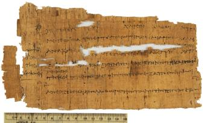

Letter from Pamnous to
Euphron.
GD 7692 (=P. Princeton I 19), II c. BC

Also
available: a larger image (250k)
Background and Physical
Properties
Publ./Side: Recto
Material: Papyrus
Items: 1
Size: 13.5 x 22.5 cm.
Lines: 7 lines + 7 lines marginal annotation
Negative: Transparency
Conservation Status:
Status: Published
--------------------------------------------
Contents
Date: II c. BC
Provenance: Gift of Robert Garrett, 1942
Acquisition: GD 7692
Language: Greek
Genre: Documentary
Author: Pamnous
Type of Text/Title of Work: Letter
Content: Letter to Euphron, with address on verso.
--------------------------------------------
Information on Publications
First edition:
Lower margin 2.0 cm., left margin 3.0 cm.
Series and volume: Papyri in the Princeton University
Collections II
Editor: E. H. Kase
Year: 1936
Pg/Nr: 8-9, no. 19
Photo: